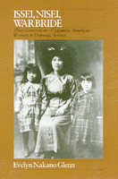

<body bgcolor="#FFFFFF" text="#000000" link="#0000FF" vlink="#CC0000" alink="#CC0000"><center><hr width="350" size="1" align="center" noshade>A unique study of Japanese American women employed as domestic workers<hr width="350" size="1" align="center" noshade><p><a href="https://cdcshoppingcart.uchicago.edu/Cart/ChicagoBook.aspx?ISBN=9780877224129&&PRESS=temple" target="_top">Buy this book!</a> | <a href="https://cdcshoppingcart.uchicago.edu/Cart/Cart.aspx?PRESS=temple" target="_top">View Cart</a> | <a href="https://cdcshoppingcart.uchicago.edu/Cart/Cart.aspx?PRESS=temple" target="_top">Check Out</a></p><p></p></center><!--none//--><h1>Issei, Nisei, War Bride</h1>
<H2>Three Generations of Japanese American Women in Domestic Service</H2>
<h3>Evelyn Nakano Glenn</h3>
<P>cloth 0-87722-412-9 $34.95, May 86, <FONT COLOR=#990033>Out of Print</FONT>
<br>paper 0-87722-564-8 $30.95, Apr 88, <FONT COLOR=#990033>Available</FONT>
<br>Electronic Book 1-43990-350-6 $30.95 <FONT COLOR=#990033>Out of Print</FONT>
<BR> 290 pp
5.5x8.25
</P><BLOCKQUOTE><I>"A richly detailed and sophisticated examination of...how historical and economic forces restricted women's lives and how women devised strategies for dealing with their plight."</I>
<br>&#151<b><I>Canadian Woman Studies</I></b><I></I></BLOCKQUOTE>
<p>In this unique study of Japanese American women employed as domestic workers, Evelyn Nakano Glenn reveals through historical research and in-depth interviews how the careers of these strong but oppressed women affected the history of Asian immigration in the San Francisco-Bay Area. Three generations of women speak in their own words about coping with degraded employment and how this work related to family and community life.
<p>The disproportionate concentration of Japanese American women in domestic service from the early part of this century to the present resulted from their status as immigrants and women of color in a race and gender stratified local labor market. The three generations covered by this study&#151pre-1924 immigrants (issei), first American born generation (nisei), and post-World War II immigrants (war brides)&#151were subjected to multiple forms of oppression but were not appendages of men nor passive victims. Dr. Glenn shows how their struggles to achieve autonomy, dignity, and a suitable livelihood were essential to the survival of the family and the community.
<p>Although unique in many ways, the situation of the Japanese American woman has important parallels with that of other women of color in the United States. Ironically her role as a domestic cast her in a menial, degraded job but often elevated her to the position of valued confidant to her employer. <I>Issei, Nisei, War Bride</I> is the first study to offer a sociological/historical perspective on these women. It addresses issues about the nature of labor systems in capitalist economies, the role of immigrant and racial ethnic women in those systems, and the consequences of participation in race and gender stratified systems for minority families and communities.
<BR>&nbsp;<h2>Reviews</h2>
<p><I>"A beautifully written, well-organized, and sociologically rich study of three generations of Japanese-American women who worked as domestics. Glenn’s study fits well into a women’s studies collection, particularly with those materials focusing on immigrants or the working class."</I>
<br>&#151<b><I>Choice</I></b>
<p><I>"... A much welcome contribution to the literature on women and work and on Japanese American women, in particular. Glenn has artfully combined a rich case study approach with detailed sociodemographics in an historical framework.... Glenn writes well and skillfully incorporates detailed historical and demographic facts with a descriptive style. The presentation of labor statistics is excellent.... This book is an important contribution, not only to Asian American Studies but to women’s studies and the literature on labor and immigrant groups."</I>
<br>&#151<b><I>Amerasia Journal</I></b>
<p><I>"A revealing view into the role of Japanese women immigrants in the United States not only as domestic workers but also in their family lives. This study is enlivened by the life stories and quotations from the women themselves..."</I>
<br>&#151<b>Edwin O. Reischauer</b>
<p><I>"This work is a valuable contribution to the literature on immigration and an important addition to the literature on occupations. It contains a fascinating and highly readable account of the array of perspectives on work and family that Glenn was uniquely positioned to collect from Japanese women and provides an extremely useful study for those who teach women and work, gender roles, and sociology of occupations courses."</I>
<br>&#151<b>Arlene Kaplan Daniels</b>
<BR>&nbsp;<H2>About the Author(s)</H2>
<P><b>Evelyn Nakano Glenn</b> is Associate Professor of Sociology at State University of New York at Binghamton.</P>
<BR><H2>Subject Categories</H2>
<p><A HREF="/tempress/sociology.html" TARGET="_top">Sociology</a>
<BR><A HREF="/tempress/race.html" TARGET="_top">Race and Ethnicity</a>
<BR><A HREF="/tempress/women.html" TARGET="_top">Women's Studies</a>
</p>
<p align="center"><a href="https://cdcshoppingcart.uchicago.edu/Cart/ChicagoBook.aspx?ISBN=9780877224129&&PRESS=temple" target="_top">Buy this book!</a> | <a href="https://cdcshoppingcart.uchicago.edu/Cart/Cart.aspx?PRESS=temple" target="_top">View Cart</a> | <a href="https://cdcshoppingcart.uchicago.edu/Cart/Cart.aspx?PRESS=temple" target="_top">Check Out</a></p><p><font face="Arial" size="1"><a href="copyright.html" onMouseOver="window.status='Web Copyright Policy';return true;" onMouseOut="window.status=''" title="Web Copyright Policy">&copy;</a> 2015 <a href="http://www.temple.edu" target="new" onMouseOver="window.status='Link to Temple University home page';return true;" onMouseOut="window.status=''" title="Link to Temple University home page">Temple University</a>. All Rights Reserved. http://www.temple.edu/tempress/titles/310_reg.html</font></p>